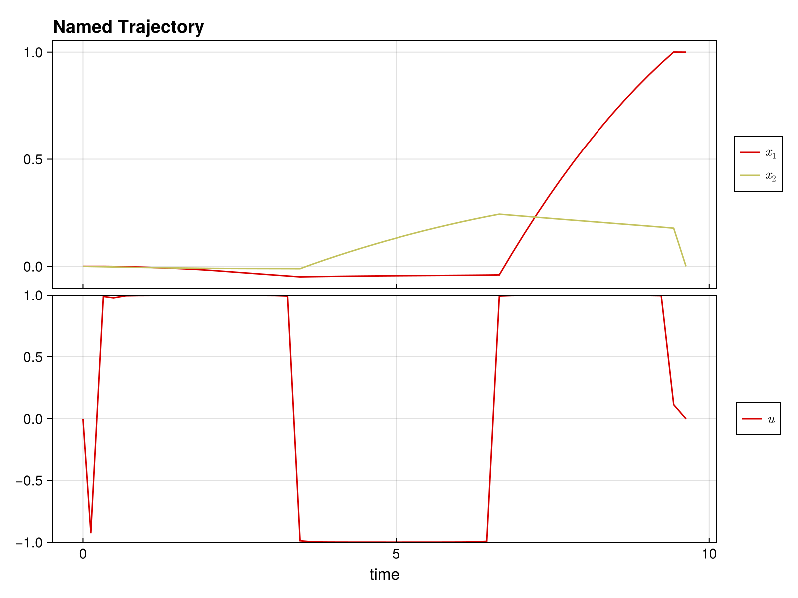

Quickstart Guide
Welcome to DirectTrajOpt.jl! This guide will get you up and running in minutes.
What is DirectTrajOpt?
DirectTrajOpt.jl solves trajectory optimization problems - finding optimal control sequences that drive a dynamical system from an initial state to a goal state while minimizing a cost function.
Installation
First, install the package:
using Pkg
Pkg.add("DirectTrajOpt")You'll also need NamedTrajectories.jl for defining trajectories:
using DirectTrajOpt
using NamedTrajectories
using LinearAlgebra
using CairoMakieA Minimal Example
Let's solve a simple problem: drive a 2D system from [0, 0] to [1, 0] with minimal control effort.
Step 1: Define the Trajectory
A trajectory contains your states, controls, and time information:
N = 50 # number of time steps
traj = NamedTrajectory(
(
x = randn(2, N), # 2D state
u = randn(1, N), # 1D control
Δt = fill(0.1, N), # time step
);
timestep = :Δt,
controls = :u,
initial = (x = [0.0, 0.0],),
final = (x = [1.0, 0.0],),
bounds = (Δt = (0.05, 0.2), u = 1.0),
)N = 50, (x = 1:2, u = 3:3, → Δt = 4:4)Step 2: Define the Dynamics
Specify how your system evolves. For bilinear dynamics ẋ = (G₀ + u₁G₁) x:
G_drift = [-0.1 1.0; -1.0 -0.1] # drift term
G_drives = [[0.0 1.0; 1.0 0.0]] # control term
G = u -> G_drift + sum(u .* G_drives)
integrator = BilinearIntegrator(G, :x, :u, traj)BilinearIntegrator: :x = exp(Δt G(:u)) :x (dim = 2)Step 3: Define the Objective
What do we want to minimize? Let's penalize control effort:
obj = QuadraticRegularizer(:u, traj, 1.0)QuadraticRegularizer on :u (R = [1.0], all)Step 4: Create and Solve
Combine everything into a problem and solve:
prob = DirectTrajOptProblem(traj, obj, integrator)DirectTrajOptProblem
Trajectory
Timesteps: 50
Duration: 4.9
Knot dim: 4
Variables: x (2), u (1), Δt (1)
Controls: u, Δt
Objective: QuadraticRegularizer on :u (R = [1.0], all)
Dynamics (1 integrators)
BilinearIntegrator: :x = exp(Δt G(:u)) :x (dim = 2)
Constraints (4 total: 2 equality, 2 bounds)
EqualityConstraint: "initial value of x"
EqualityConstraint: "final value of x"
BoundsConstraint: "bounds on Δt"
BoundsConstraint: "bounds on u"The problem summary shows the trajectory, objective, dynamics, and constraints:
probDirectTrajOptProblem
Trajectory
Timesteps: 50
Duration: 4.9
Knot dim: 4
Variables: x (2), u (1), Δt (1)
Controls: u, Δt
Objective: QuadraticRegularizer on :u (R = [1.0], all)
Dynamics (1 integrators)
BilinearIntegrator: :x = exp(Δt G(:u)) :x (dim = 2)
Constraints (4 total: 2 equality, 2 bounds)
EqualityConstraint: "initial value of x"
EqualityConstraint: "final value of x"
BoundsConstraint: "bounds on Δt"
BoundsConstraint: "bounds on u"solve!(prob; max_iter = 100, verbose = false)This is Ipopt version 3.14.19, running with linear solver MUMPS 5.8.2.
Number of nonzeros in equality constraint Jacobian...: 776
Number of nonzeros in inequality constraint Jacobian.: 0
Number of nonzeros in Lagrangian Hessian.............: 1254
Total number of variables............................: 196
variables with only lower bounds: 0
variables with lower and upper bounds: 100
variables with only upper bounds: 0
Total number of equality constraints.................: 98
Total number of inequality constraints...............: 0
inequality constraints with only lower bounds: 0
inequality constraints with lower and upper bounds: 0
inequality constraints with only upper bounds: 0
iter objective inf_pr inf_du lg(mu) ||d|| lg(rg) alpha_du alpha_pr ls
0 1.1593709e-01 4.48e+00 2.44e-08 0.0 0.00e+00 - 0.00e+00 0.00e+00 0
1 1.3204018e-01 1.89e-01 1.22e+00 -1.5 3.35e+00 - 9.57e-01 1.00e+00h 1
2 1.0659062e-01 7.98e-02 5.10e-01 -1.4 3.12e+00 - 5.19e-01 5.49e-01f 1
3 1.6831433e-01 3.89e-02 2.68e-01 -2.0 2.81e+00 - 5.48e-01 5.11e-01h 1
4 2.1035740e-01 3.27e-02 9.04e-01 -1.7 8.92e-01 0.0 7.14e-01 1.59e-01h 1
5 2.6499734e-01 2.40e-02 4.95e-01 -1.6 2.83e+00 - 4.10e-01 2.66e-01h 1
6 3.1704257e-01 2.03e-02 6.61e-01 -1.3 7.16e-01 -0.5 8.22e-01 1.52e-01h 1
7 4.1901403e-01 1.46e-02 2.84e+00 -1.4 2.40e+00 - 4.89e-01 2.79e-01h 1
8 4.8996268e-01 2.52e-02 6.59e+00 -3.2 7.17e+00 - 1.31e-01 1.48e-01H 1
9 5.4026080e-01 2.40e-02 5.42e+00 -1.0 3.68e+00 - 1.00e+00 9.66e-02h 1
iter objective inf_pr inf_du lg(mu) ||d|| lg(rg) alpha_du alpha_pr ls
10 7.2376109e-01 1.62e-02 4.83e+01 -1.1 1.38e+00 - 1.00e+00 3.22e-01h 1
11 7.5998348e-01 1.58e-02 5.97e+02 0.3 1.55e+01 -0.1 1.00e+00 2.23e-02h 1
12 7.7488977e-01 1.57e-02 1.47e+04 1.7 3.41e+01 - 9.83e-01 1.00e-02h 1
13 8.1815166e-01 1.50e-02 2.40e+05 2.5 1.33e+01 - 1.00e+00 4.49e-02h 1
14 8.3855851e-01 1.48e-02 3.74e+05 1.3 8.74e+00 - 5.23e-02 1.44e-02h 1
15 8.5534207e-01 1.47e-02 3.84e+05 2.7 1.54e+01 - 4.18e-03 6.75e-03h 1
16 8.6074390e-01 1.46e-02 4.64e+05 -3.4 9.10e+00 - 1.48e-02 4.57e-03h 1
17 8.7819382e-01 1.45e-02 5.29e+05 2.7 2.47e+01 - 1.43e-03 4.81e-03h 1
18 8.8045093e-01 1.45e-02 8.67e+06 2.7 6.78e+00 - 4.46e-01 2.07e-03h 1
19 8.9635566e-01 1.42e-02 3.37e+07 2.7 7.67e+00 - 1.02e-01 2.08e-02h 1
iter objective inf_pr inf_du lg(mu) ||d|| lg(rg) alpha_du alpha_pr ls
20 9.0198452e-01 1.41e-02 2.38e+08 2.7 5.11e+00 - 4.30e-02 6.65e-03h 1
21 9.0909421e-01 1.41e-02 1.10e+09 2.7 1.46e+02 - 2.28e-06 5.23e-04h 1
22 9.1654756e-01 1.41e-02 1.11e+09 2.7 6.08e+02 - 1.28e-04 8.10e-05h 1
23 9.2103911e-01 1.41e-02 4.85e+10 2.4 6.17e+02 - 1.00e+00 3.88e-05h 1
24r 9.2103911e-01 1.41e-02 9.72e+02 2.7 0.00e+00 - 0.00e+00 3.74e-07R 4
25r 8.9334638e-01 9.07e-03 9.97e+00 0.4 5.44e-01 - 9.90e-01 9.86e-01f 1
26 8.9090642e-01 9.08e-03 7.04e+02 2.0 1.66e+02 - 9.58e-03 3.15e-05f 1
27 9.0437003e-01 8.86e-03 2.28e+04 1.3 2.11e+01 - 3.95e-01 2.40e-02h 1
28 9.2439191e-01 8.78e-03 3.84e+05 1.3 5.41e+01 - 1.00e+00 9.14e-03h 1
29 9.3397909e-01 8.69e-03 1.86e+07 1.3 1.55e+00 - 1.00e+00 1.21e-02h 1
iter objective inf_pr inf_du lg(mu) ||d|| lg(rg) alpha_du alpha_pr ls
30 9.4037381e-01 8.62e-03 2.17e+09 1.3 3.38e+00 - 1.00e+00 7.55e-03h 1
31 9.4101293e-01 8.62e-03 2.15e+12 1.3 5.21e-01 - 1.00e+00 9.12e-04h 1
32 9.4101295e-01 8.62e-03 1.97e+10 1.3 5.80e-03 9.8 9.91e-01 6.25e-02h 5
33 9.4108061e-01 8.62e-03 1.05e+14 0.6 4.42e-01 - 5.06e-01 1.03e-04h 1
34 9.4106498e-01 8.55e-03 8.11e+13 0.6 3.36e-01 - 9.43e-01 7.81e-03h 8
35 9.4106374e-01 8.51e-03 1.71e+16 0.1 1.70e-01 - 1.00e+00 4.65e-03H 1
36 9.4105567e-01 8.44e-03 1.23e+17 0.7 3.12e-01 - 1.00e+00 8.44e-03h 5
37 9.4104868e-01 8.41e-03 4.73e+18 1.6 4.99e-01 - 1.00e+00 3.15e-03h 4
38 9.4104868e-01 8.40e-03 3.15e+16 2.7 9.03e-06 17.6 9.93e-01 1.00e+00h 1
39 9.4104866e-01 8.38e-03 3.95e+12 1.1 2.73e-05 17.2 1.00e+00 1.00e+00h 1
iter objective inf_pr inf_du lg(mu) ||d|| lg(rg) alpha_du alpha_pr ls
40 9.4104847e-01 8.29e-03 4.11e+12 0.9 8.52e-05 16.7 1.00e+00 9.90e-01h 1
41 9.4104616e-01 7.88e-03 5.95e+12 2.2 3.71e-04 16.2 1.00e+00 9.90e-01h 1
42 9.4104821e-01 7.89e-03 2.20e+17 0.6 1.67e-01 - 1.00e+00 1.24e-02h 3
43 9.4104813e-01 7.93e-03 9.51e+16 2.7 1.06e+01 - 1.00e+00 4.87e-05h 12
44 9.4154192e-01 3.42e-01 6.35e+16 2.7 4.71e-01 - 6.79e-01 6.79e-01s 22
45 9.4142275e-01 2.82e-01 1.77e+17 2.0 2.20e-01 - 8.50e-01 1.65e-01h 1
46 9.4234102e-01 2.60e-01 2.26e+17 1.3 3.36e-01 - 8.81e-02 1.00e+00h 1
47 9.4221249e-01 2.41e-01 2.21e+17 0.6 4.22e-01 - 3.26e-04 6.28e-02f 4
48 9.4221182e-01 2.41e-01 2.21e+17 -0.1 2.19e-04 19.3 1.18e-04 1.00e+00h 1
In iteration 48, 1 Slack too small, adjusting variable bound
49 9.3937858e-01 7.08e-01 4.15e+18 -0.8 2.35e+00 - 5.72e-06 5.72e-01H 1
In iteration 49, 1 Slack too small, adjusting variable bound
iter objective inf_pr inf_du lg(mu) ||d|| lg(rg) alpha_du alpha_pr ls
50 9.3867831e-01 6.54e-01 4.03e+18 -0.8 1.59e+00 - 5.01e-02 3.35e-02H 1
51 9.3867840e-01 6.54e-01 4.03e+18 -0.8 7.39e-02 19.8 5.04e-04 5.04e-04s 11
52 9.3667898e-01 6.04e-01 3.72e+18 -0.8 8.41e-01 - 7.59e-02 7.59e-02s 11
53 9.2971004e-01 3.92e-01 2.09e+18 -0.8 9.17e-01 - 4.80e-01 4.80e-01s 11
54r 9.2971004e-01 3.92e-01 9.99e+02 -0.4 0.00e+00 19.3 0.00e+00 0.00e+00R 1
55r 9.2969430e-01 3.92e-01 9.99e+02 2.6 1.04e+02 - 4.18e-01 3.42e-06f 14
56r 9.2738765e-01 3.60e-01 8.65e+02 1.8 9.09e+00 - 1.52e-02 5.04e-03f 1
57r 9.1029552e-01 3.12e-01 1.67e+03 1.1 9.94e-01 - 1.20e-01 2.06e-01f 1
58 9.3624855e-02 9.09e-02 2.62e+03 -0.8 9.75e-01 - 3.51e-02 7.58e-01f 1
59 1.2417336e-01 8.21e-02 1.55e+17 -0.8 2.44e-01 18.8 5.32e-02 9.88e-02f 1
iter objective inf_pr inf_du lg(mu) ||d|| lg(rg) alpha_du alpha_pr ls
60 1.2442659e-01 8.21e-02 1.55e+17 -0.8 2.73e-01 18.3 2.87e-01 8.19e-04h 1
61r 1.2442659e-01 8.21e-02 9.99e+02 -0.8 0.00e+00 18.8 0.00e+00 2.52e-07R 6
62r 1.4257864e-01 7.02e-02 4.45e+02 1.4 3.15e+02 - 1.00e+00 4.46e-04f 1
63 2.0453595e-01 6.31e-02 4.26e+00 -0.8 5.02e-01 - 3.89e-01 1.20e-01f 1
64 3.3030952e-01 5.67e-02 1.01e+01 -0.8 1.27e+00 - 4.48e-01 2.08e-01h 1
65 4.0674831e-01 5.05e-02 1.78e+01 -0.8 1.31e+00 - 4.02e-01 1.11e-01h 1
66r 4.0674831e-01 5.05e-02 9.97e+02 -0.8 0.00e+00 17.8 0.00e+00 4.77e-07R 22
67r 3.9921607e-01 2.80e-02 1.00e+03 1.2 8.41e+01 - 1.00e+00 2.59e-03f 1
68 4.9956827e-01 2.56e-02 2.49e+02 -0.8 1.13e+00 - 1.02e-01 8.66e-02h 1
69 6.0015370e-01 2.37e-02 2.20e+02 -0.8 1.69e+00 - 1.32e-01 7.44e-02h 1
iter objective inf_pr inf_du lg(mu) ||d|| lg(rg) alpha_du alpha_pr ls
70 6.6245440e-01 2.29e-02 2.12e+02 -0.8 3.34e+00 - 4.35e-02 3.53e-02h 1
71 6.9388104e-01 2.25e-02 2.26e+02 -0.8 8.29e+00 - 2.80e-02 1.76e-02h 1
72 7.0379884e-01 2.23e-02 2.25e+02 -0.8 2.03e+01 - 2.27e-02 5.79e-03h 2
73 7.2745039e-01 2.21e-02 4.43e+02 -0.8 2.73e+01 - 2.19e-02 9.82e-03h 1
74 7.4532750e-01 2.19e-02 2.08e+03 -0.8 1.07e+02 - 1.38e-02 1.06e-02h 1
75 7.6047212e-01 2.18e-02 2.03e+03 -0.8 3.62e+01 - 2.16e-03 2.26e-03h 1
76 7.6409166e-01 2.18e-02 2.91e+03 -0.8 2.71e+01 - 1.56e-02 2.55e-03h 1
77 7.8167757e-01 2.18e-02 2.41e+04 -0.8 8.79e+02 - 5.90e-04 1.69e-03h 1
78 7.8904025e-01 2.17e-02 2.43e+04 -0.8 4.86e+01 - 1.18e-02 1.57e-03h 1
79 7.9303451e-01 2.17e-02 1.03e+05 -0.8 5.07e+01 - 2.13e-02 1.59e-03h 1
iter objective inf_pr inf_du lg(mu) ||d|| lg(rg) alpha_du alpha_pr ls
80 7.9324122e-01 2.17e-02 8.29e+06 -0.8 4.43e+01 - 1.33e-02 1.52e-04h 1
81 7.9326635e-01 2.17e-02 1.73e+10 -0.8 2.59e+01 - 6.52e-02 3.00e-05h 1
82r 7.9326635e-01 2.17e-02 1.00e+03 -0.8 0.00e+00 - 0.00e+00 2.98e-07R 16
83r 7.9103383e-01 7.32e-03 9.59e+02 0.8 8.88e+00 - 9.91e-01 1.24e-02f 1
84 7.9110933e-01 7.32e-03 3.75e+03 -0.8 4.15e-01 - 7.37e-01 3.45e-04h 1
85 7.9189562e-01 7.32e-03 1.15e+03 -0.8 5.10e+00 - 5.01e-05 6.69e-04h 1
86r 7.9189562e-01 7.32e-03 1.00e+03 -0.8 0.00e+00 - 0.00e+00 2.54e-07R 6
87r 8.0955268e-01 6.93e-03 7.44e+02 0.5 6.48e+01 - 9.93e-01 2.24e-03f 1
88r 5.4130078e-01 4.04e-03 1.12e+02 -0.2 3.59e-01 - 1.00e+00 1.00e+00f 1
89 6.6684516e-01 2.94e-03 1.80e+00 -4.0 1.84e-01 - 4.63e-01 3.56e-01h 1
iter objective inf_pr inf_du lg(mu) ||d|| lg(rg) alpha_du alpha_pr ls
90 7.1406429e-01 2.64e-03 9.11e+00 -1.1 9.83e-01 - 7.52e-01 1.09e-01h 1
91 7.6163241e-01 2.41e-03 8.67e+01 -0.6 2.30e+00 - 1.00e+00 9.46e-02h 1
92 8.1581813e-01 2.27e-03 1.25e+03 0.4 2.56e+01 - 1.00e+00 6.14e-02h 1
93 8.5884915e-01 2.15e-03 2.57e+03 -4.0 5.21e+00 - 1.30e-01 6.21e-02h 1
94 8.7492928e-01 2.14e-03 2.24e+04 1.5 1.95e+01 - 9.82e-01 7.09e-03h 1
95 8.9924241e-01 2.08e-03 7.22e+05 2.7 1.52e+01 - 1.00e+00 2.85e-02h 1
96 9.1341259e-01 2.07e-03 3.11e+223 2.7 2.25e+02 - 4.65e-01 4.66e-03h 1
97 9.1412543e-01 2.07e-03 3.11e+223 0.8 2.26e+214 - 1.95e-217 2.56e-217h 4
98 9.1412543e-01 2.07e-03 8.41e+06 2.7 2.00e+216 - 4.56e-219 4.59e-231h 43
99 9.1464870e-01 2.07e-03 8.20e+06 2.0 4.29e+00 - 3.32e-02 6.07e-04h 1
iter objective inf_pr inf_du lg(mu) ||d|| lg(rg) alpha_du alpha_pr ls
100 9.1531330e-01 2.07e-03 9.85e+06 2.7 1.27e+01 - 8.69e-03 2.70e-04h 1
Number of Iterations....: 100
(scaled) (unscaled)
Objective...............: 9.1531330424215825e-09 9.1531330424215829e-01
Dual infeasibility......: 9.8543024332245644e+06 9.8543024332245650e+14
Constraint violation....: 2.0717224820068283e-03 2.0717224820068283e-03
Variable bound violation: 0.0000000000000000e+00 0.0000000000000000e+00
Complementarity.........: 1.2525487644167511e+04 1.2525487644167512e+12
Overall NLP error.......: 1.9468433585547027e+02 9.8543024332245650e+14
Number of objective function evaluations = 299
Number of objective gradient evaluations = 98
Number of equality constraint evaluations = 299
Number of inequality constraint evaluations = 0
Number of equality constraint Jacobian evaluations = 107
Number of inequality constraint Jacobian evaluations = 0
Number of Lagrangian Hessian evaluations = 100
Total seconds in IPOPT = 7.468
EXIT: Maximum Number of Iterations Exceeded.Step 5: Access the Solution
Let's look at the results.
plot(prob.trajectory)
The optimized trajectory is stored in prob.trajectory:
println("Final state: ", prob.trajectory.x[:, end])
println("Control norm: ", norm(prob.trajectory.u))Final state: [1.0, 0.0]
Control norm: 6.828059384623444What You Can Do
- Multiple objectives: Combine regularization, minimum time, terminal costs
- Flexible dynamics: Linear, bilinear, time-dependent systems
- Add constraints: Bounds, path constraints, custom nonlinear constraints
- Smooth controls: Penalize derivatives for smooth, implementable controls
- Free time: Optimize trajectory duration
This page was generated using Literate.jl.